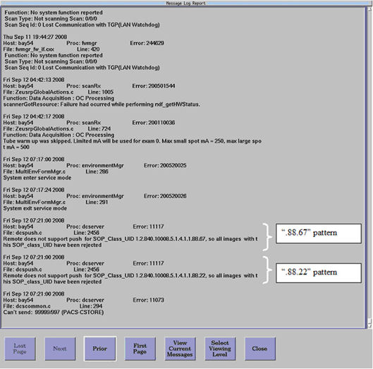

If it exists, that means PACS system does not support “DICOM X-ray Radiation Dose SR SOP” (.88.67) or “DICOM Enhanced SR SOP”(.88.22) and set Dose record setting to “OFF” in Reconfig menu.
Illustration 2: Example GEsyslog
